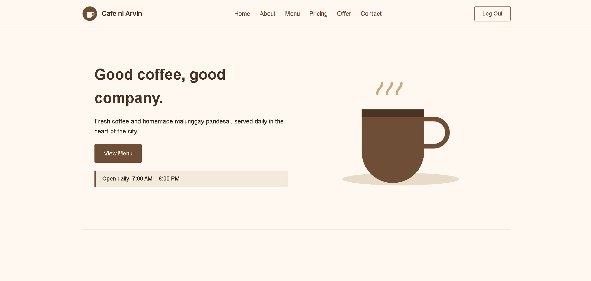
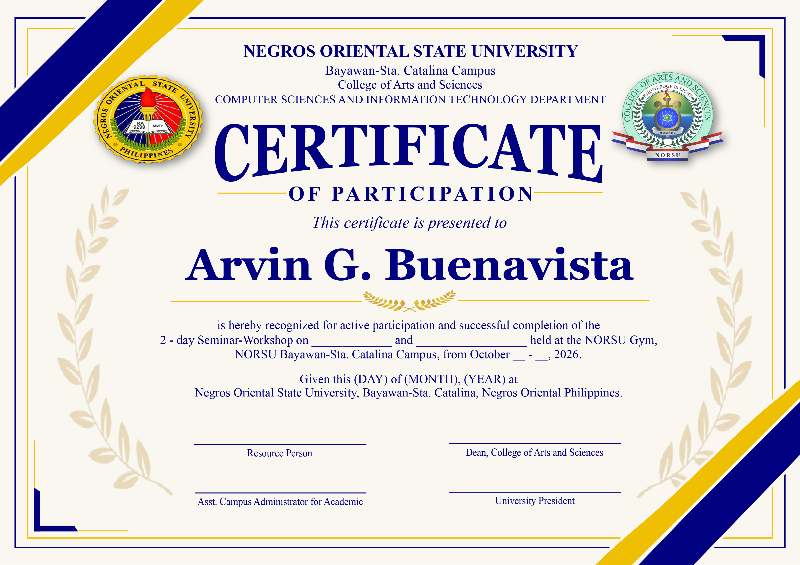
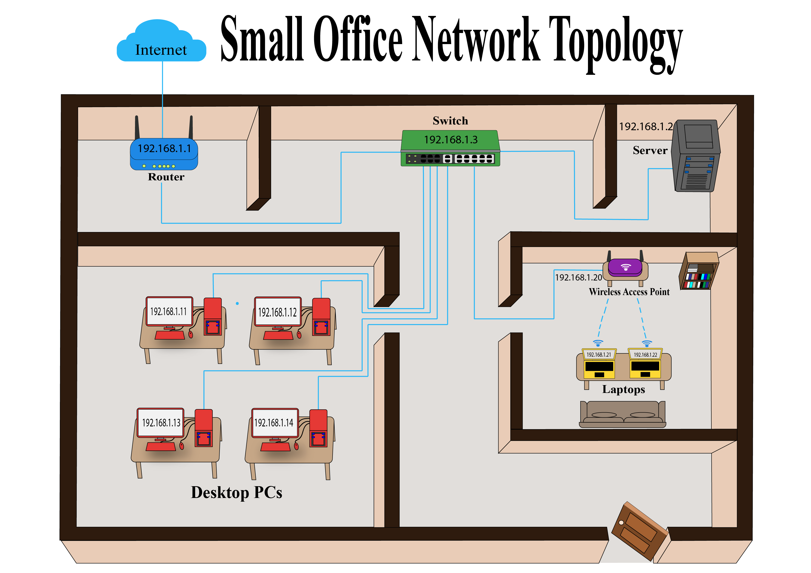
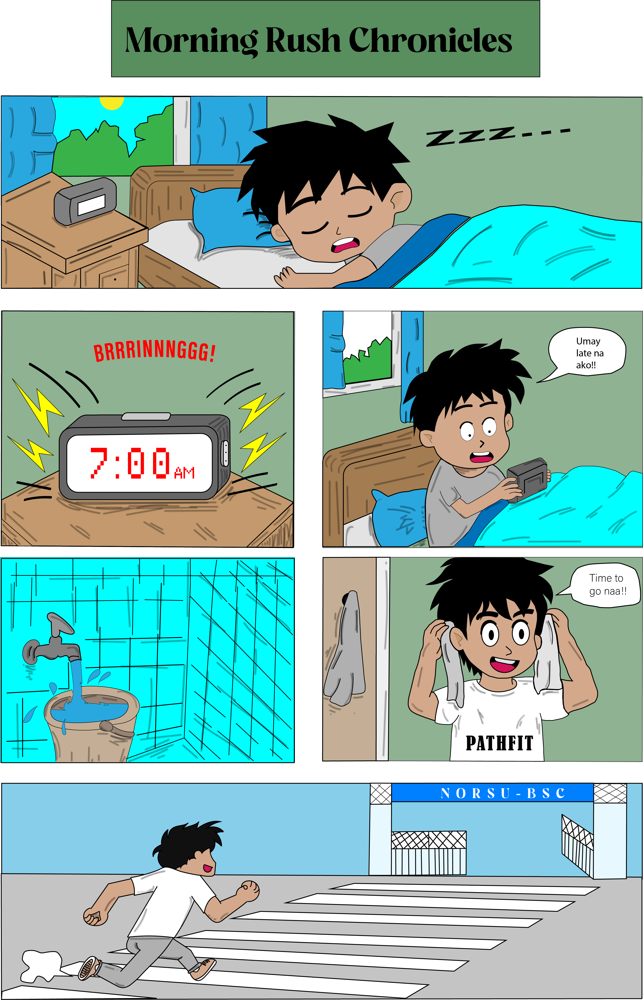
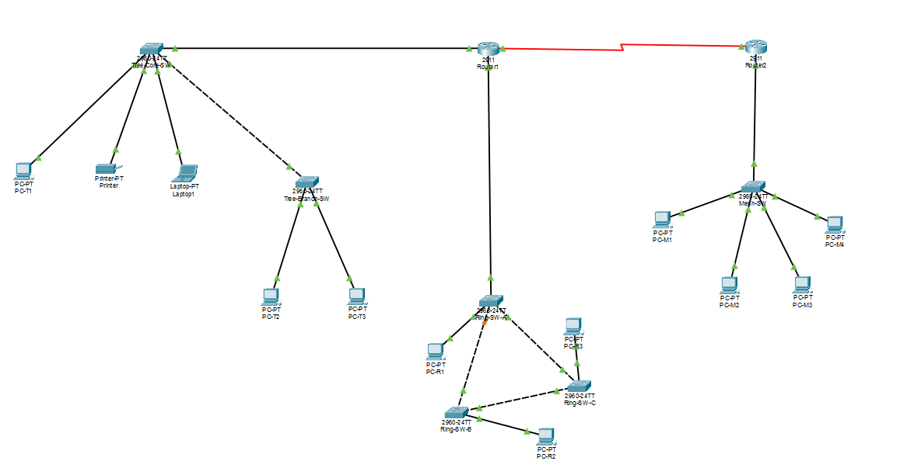

Cafe ni Arvin System
A cafe management system designed to track transactions, inventory, sales, schedules, and reports for efficient daily operations.
Sample academic and personal projects showing development, design, and problem-solving skills.

A cafe management system designed to track transactions, inventory, sales, schedules, and reports for efficient daily operations.

A digital concept for monitoring scholarship information and improving access to student records.

A visual representation of a network infrastructure with optimized routing and connectivity.

A creative comic-book illustration project showcasing storytelling and visual design skills.

A detailed diagram of network connections and configurations for efficient data flow and communication.